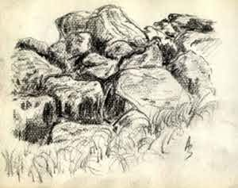
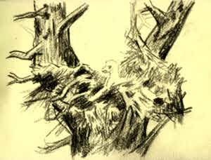
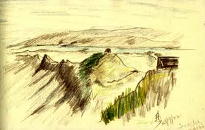

|  | Rocks Charcoal pencil on handmade paper. Sometime in 2000 |
|  | Nest From an orignal in an old Russian chilren's book. Charcoal pencil on handmade paper. Sept 2002 |
|  | Rajgad - Suvela Machi Sketched from photograph taken by me. Camlin color pencils on handmade paper. 23 Sept 2002 |